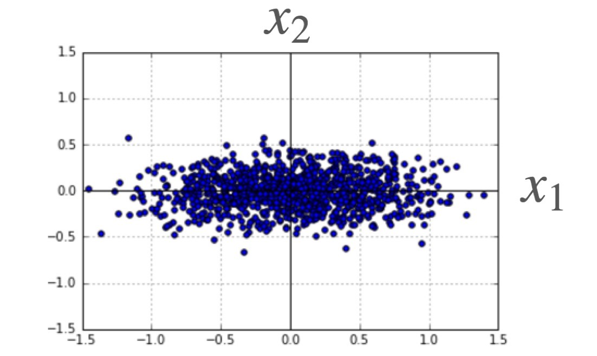

We review classical linear regression using vector-matrix notation. In particular, we derive a) the least-squares solution, b) the fit's coefficient covariance matrix -- showing that the coefficient estimates are most precise along directions that have been sampled over a large range of values (the high variance directions, a la PCA), and c) an unbiased estimate for the underlying sample variance (assuming normal sample variance in this last case). We then review how these last two results can be used to provide confidence intervals / hypothesis tests for the coefficient estimates. Finally, we show that similar results follow from a Bayesian approach.
Last edited July 23, 2016.
Introduction
Here, we consider the problem of fitting a linear curve to \(N\) data points of the form \((\vec{x}_i, y_i),\) where the \(\{\vec{x}_i\}\) are column vectors of predictors that sit in an \(L\)-dimensional space and the \(\{y_i\}\) are the response values we wish to predict given the \(\{x_i\}\). The linear approximation will be defined by a set of coefficients, \(\{\beta_j\}\) so that
We seek the \(\vec{\beta}\) that minimizes the average squared \(y\) error,
It turns out that this is a problem where one can easily derive an analytic expression for the optimal solution. It's also possible to derive an expression for the variance in the optimal solution -- that is, how much we might expect the optimal parameter estimates to change were we to start with some other \(N\) data points instead. These estimates can then be used to generate confidence intervals for the coefficient estimates. Here, we review these results, give a simple interpretation to the theoretical variance, and finally show that the same results follow from a Bayesian approach.
Optimal solution
We seek the coefficient vector that minimizes (\ref{2}). We can find this by differentiating this cost function with respect to \(\vec{\beta}\), setting the result to zero. This gives,
We next define the matrix \(X\) so that \(X_{i,j} = \vec{x}_{i,j}\). Plugging this into the above, we obtain
Rearranging gives
This is the squared-error-minimizing solution.
Parameter covariance matrix
Now, when one carries out a linear fit to some data, the best line often does not go straight through all of the data. Here, we consider the case where the reason for the discrepancy is not that the posited linear form is incorrect, but that there are some hidden variables not measured that the \(y\)-values also depend on. Assuming our data points represent random samples over these hidden variables, we can model their effect as adding a random noise term to the form (\ref{1}), so that
with \(\langle \epsilon_i \rangle =0\), \(\langle \epsilon_i^2 \rangle = \sigma^2\), and \(\vec{\beta}_{true}\) the exact (but unknown) coefficient vector.
Plugging (\ref{noise}) into (\ref{optimal}), we see that \(\langle \vec{\beta} \rangle = \vec{\beta}_{true}\). However, the variance of the \(\epsilon_i\) injects some uncertainty into our fit: Each realization of the noise will generate slightly different \(y\) values, causing the \(\vec{\beta}\) fit coefficients to vary. To estimate the magnitude of this effect, we can calculate the covariance matrix of \(\vec{\beta}\). At fixed (constant) \(X\), plugging in (\ref{optimal}) for \(\vec{\beta}\) gives
In the third line here, note that we have assumed that the \(\epsilon_i\) are independent, so that \(cov(\vec{y},\vec{y}) = \sigma^2 I.\) We've also used the fact that \(X^T X\) is symmetric.
To get a feel for the significance of (\ref{cov}), it is helpful to consider the case where the average \(x\) values are zero. In this case,
 That is, \(X^T X\) is proportional to the correlation matrix of our \(x\) values. This correlation matrix is real and symmetric, and thus has an orthonormal set of eigenvectors. The eigenvalue corresponding to the \(k\)-th eigenvector gives the variance of our data set's \(k\)-th component values in this basis -- details can be found in our article on PCA. This implies a simple interpretation of (\ref{cov}): The variance in the \(\vec{\beta}\) coefficients will be lowest for predictors parallel to the highest variance PCA components (eg \(x_1\) in the figure shown) and highest for predictors parallel to the lowest variance PCA components (\(x_2\) in the figure). This observation can often be exploited during an experiment's design: If a particular coefficient is desired to high accuracy, one should make sure to sample the corresponding predictor over a wide range.
{kind=link}
[Note: Cathy gives an interesting, alternative interpretation for the parameter estimate variances in a follow-up post, here.]
Unbiased estimator for \(\sigma^2\)
The result (\ref{cov}) gives an expression for the variance of the parameter coefficients in terms of the underlying sample variance \(\sigma^2\). In practice, \(\sigma^2\) is often not provided and must be estimated from the observations at hand. Assuming that the \(\{\epsilon_i\}\) in (\ref{noise}) are independent \(\mathcal{N}(0, \sigma^2)\) random variables, we now show that the following provides an unbiased estimate for this variance:
Note that this is a normalized sum of squared residuals from our fit, with \((N-L)\) as the normalization constant -- the number of samples minus the number of fit parameters. To prove that \(\langle S^2 \rangle = \sigma^2\), we plug in (\ref{optimal}) for \(\vec{\beta}\), combining with (\ref{noise}) for \(\vec{y}\). This gives
The second term in the last line is the \(i\)-th component of the vector
Here, \(\mathbb{P}\) is a projection operator -- this follows from the fact that \(\mathbb{P}^2 = \mathbb{P}\). When it appears in (\ref{projection}), \(\mathbb{P}\) maps \(\vec{\epsilon}\) into the \(L\)-dimensional coordinate space spanned by the \(\{\vec{x_i}\}\), scales the result using (\ref{corr_mat}), then maps it back into its original \(N\)-dimensional space. The net effect is to project \(\vec{\epsilon}\) into an \(L\)-dimensional subspace of the full \(N\)-dimensional space (more on the \(L\)-dimensional subspace just below). Plugging (\ref{projection}) into (\ref{S2}), we obtain
This final form gives the result: \(\vec{\epsilon}\) is an \(N\)-dimensional vector of independent, \(\mathcal{N}(0, \sigma^2)\) variables, and (\ref{S3}) shows that \(S^2\) is equal to \(1/(N-L)\) times the squared length of an \((N-L)\)-dimensional projection of it (the part along \(\mathbb{I} - \mathbb{P}\)). The length of this projection will on average be \((N-L) \sigma^2\), so that \(\langle S^2 \rangle = \sigma^2\).
We need to make two final points before moving on. First, because \(S^2\) is a sum of \((N-L)\) independent \(\mathcal{N}(0, \sigma^2)\) random variables, it follows that
Second, \(S^2\) is independent of \(\vec{\beta}\): We can see this by rearranging (\ref{optimal}) as
We can left multiply this by \(X\) without loss to obtain
where we have used (\ref{projection}). Comparing (\ref{beta2}) and (\ref{S3}), we see that the components of \(\vec{\epsilon}\) that inform \(\vec{\beta}\) are in the subspace fixed by \(\mathbb{P}\). This is the space complementary to that informing \(S^2\), implying that \(S^2\) is independent of \(\vec{\beta}\).
Confidence intervals and hypothesis tests
The results above immediately provide us with a method for generating confidence intervals for the individual coefficient estimates (continuing with our Normal error assumption): From (\ref{beta3}), it follows that the coefficients are themselves Normal random variables, with variance given by (\ref{cov}). Further, \(S^2\) provides an unbiased estimate for \(\sigma^2\), proportional to a \(\chi^2_{N-L}\) random variable. Combining these results gives
That is, the pivot at left follows a Student's \(t\)-distribution with \((N-L)\) degrees of freedom (i.e., it's proportional to the ratio of a standard Normal and the square root of a chi-squared variable with that many degrees of freedom). A rearrangement of the above gives the following level \(\alpha\) confidence interval for the true value:
where \(\beta_i\) is obtained from the solution (\ref{optimal}). The interval above can be inverted to generate level \(\alpha\) hypothesis tests. In particular, we note that a test of the null -- that a particular coefficient is actually zero -- would not be rejected if (\ref{interval}) contains the origin. This approach is often used to test whether some data is consistent with the assertion that a predictor is linearly related to the response.
[Again, see Cathy's follow-up post here for an alternate take on these results.]
Bayesian analysis
The final thing we wish to do here is consider the problem from a Bayesian perspective, using a flat prior on the \(\vec{\beta}\). In this case, assuming a Gaussian form for the \(\epsilon_i\) in (\ref{noise}) gives
Notice that this posterior form for \(\vec{\beta}\) is also Gaussian, and is centered about the solution (\ref{optimal}). Formally, we can write the exponent here in the form
where \(\Sigma^2\) is the covariance matrix for the components of \(\vec{\beta}\), as implied by the posterior form (\ref{18}). We can get the components of its inverse by differentiating (\ref{18}) twice. This gives,
In other words, \(\Sigma^2 = \sigma^2 (X^T X)^{-1}\), in agreement with the classical expression (\ref{cov}).
Summary
In summary, we've gone through one quick derivation of linear fit solution that minimizes the sum of squared \(y\) errors for a given set of data. We've also considered the variance of this solution, showing that the resulting form is closely related to the principal components of the predictor variables sampled. The covariance solution (\ref{cov}) tells us that all parameters have standard deviations that decrease like \(1/\sqrt{N}\), with \(N\) the number of samples. However, the predictors that are sampled over wider ranges always have coefficient estimates that more precise. This is due to the fact that sampling over many different values allows one to get a better read on how the underlying function being fit varies with a predictor. Following this, assuming normal errors, we showed that \(S^2\) provides an unbiased estimate, chi-squared estimator for the sample variance -- one that is independent of parameter estimates. This allowed us to then write down a confidence interval for the \(i\)-th coefficient. The final thing we have shown is that the Bayesian, Gaussian approximation gives similar results: In this approach, the posterior that results is centered about the classical solution, and has a covariance matrix equal to that obtained by classical approach.